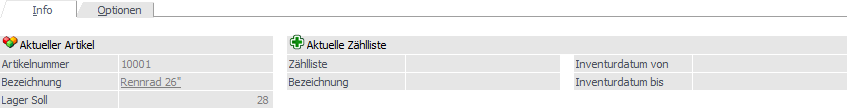
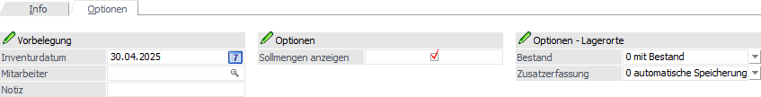

Der Inhalt der Tabelle "Erfassen" ist abhängig vom Ausgangsfenster Inventur - Register "Eingabe":
ü Ohne Zählliste - ohne
Datumsselektion
Es werden alle Artikel gemäß Selektion angezeigt. Hierbei ist
es irrelevant, ob bereits ein Inventurstand erfasst wurde oder nicht. Es werden
aber nur jene bereits getätigten Erfassungen dargestellt, deren Inventurdatum
gleich oder größer dem Einlogdatum entspricht.
ü Ohne Zählliste - mit
Datumsselektion
Es werden alle Artikel gemäß der Selektion angezeigt, für
welche es nicht gebuchte Inventurerfassungen gibt.
ü Ohne Zählliste - Option "Manuelle
Erfassung" aktiviert
In der Tabelle werden keine Artikelzeilen angezeigt,
sondern die Eingabe der Artikel erfolgt manuell. Wird hierbei ein Artikel
erfasst, welcher bereits ungebuchte Inventurwerte besitzt, so werden diese
vorgeschlagen, sofern das Inventurdatum gleich oder größer dem Einlogdatum
ist.
ü Mit Zählliste
Es werden alle
Artikel gemäß Zählliste
angezeigt.
Achtung
Jeder Artikel bzw. Lagerort kann nur 1x im ungebuchten Zustand vorhanden sein. D.h. ein Artikel, welcher bereits über eine Zählliste erfasst wurde, kann nicht nochmals über eine andere Zählliste bzw. ohne Zählliste erfasst werden oder umgekehrt!

In der Tabelle werden standardmäßig die folgenden Spalten dargestellt und Funktionen angeboten:
Ø  alle Ausprägungen ein- bzw.
ausblenden
alle Ausprägungen ein- bzw.
ausblenden
Durch Anwahl dieses Buttons werden alle Ausprägungen in der Inventurerfassung ein- bzw. ausgeblendet. Die Auswahl wird benutzerspezifisch gespeichert und beim nächsten Öffnen automatisch angewendet.
Hinweis
Zur Nutzung dieser Funktion muss in der Eingabe die Option "manuelle Erfassung" oder die Einstellung "Hauptartikel" aktiviert sein. Des Weiteren werden bei Anwahl der Buttons "Übernahme Soll => Ist" bzw. "Übernahme 0 => Ist" die Ausprägungen automatisch eingeblendet.
Ø manuelle Ergänzung
Erfolgt die Erfassung über eine Zählliste, so wird in dieser Spalte durch eine farbliche Kennzeichnung auf manuelle Erfassungen (d.h. nicht zur Zähllisten-Selektion passende Artikel) hingewiesen.
Ø Zeile
Jede Erfassungszeile erhält automatisch eine Nummer zugeordnet. Neben einer schnellen Navigation kann hierüber der Zusammenhang von Ausprägungsartikeln dargestellt werden:
ü Navigation
Wenn der Fokus in
der Spalte liegt, kann durch Eingabe der Nummer direkt zur jeweiligen Erfassung
gewechselt werden.
ü Ausprägungsartikel
Wird die
Option "Hauptartikel" im Ausgangsfenster aktiviert, so wird
durch unterschiedliche Farbgebung darauf hingewiesen, ob die Erfassungszeilen
von Ausprägungen vom gleichen Hauptartikel stammen (blau bzw. grün) oder nicht
(schwarz).
Ø Info
In der Spalte "Info" wird das Icon angezeigt, sobald es für den Artikel zumindest eine ungebuchte Inventurerfassung gibt. Das Inventurdatum der alten Erfassung ist dabei abweichenend zum Einlogdatum und würde in der Folge überschrieben werden.
Hinweis
Durch einen Doppelklick auf das Icon wird eine Liste der alten ungebuchten Erfassungen (bezogen auf den aktuellen Artikel) am Bildschirm ausgegeben.
Ø Artikelnummer
An dieser Stelle wird die Artikelnummer des Artikels dargestellt bzw. kann eingegeben werden.
Ø Ausprägungsartikelnummer (optional)
Handelt es sich um einen Ausprägungsartikel, so wird in dieser Spalte die entsprechende Ausprägungsartikelnummer angezeigt.
Ø Artikelbezeichnung
In der Spalte "Artikelbezeichnung" wird die Bezeichnung des Artikels angezeigt.
Ø Charge-/Identnr.
Handelt es sich bei dem Artikel um einen Chargen- oder Identnummernartikel, so wird die jeweilige Nummer angezeigt.
Ø Lager Ist / Lager Ist 2
In diesen Spalten erfolgt die Eingabe der gezählten Inventurmenge. Sobald das Eingabefeld bestätigt bzw. verlassen wird, erfolgt automatisch die Befüllung des Inventurdatums.
Hinweis
Bei Artikeln mit Lagerortstruktur wird automatisch das Fenster Lagerorte erfassen geöffnet.
Ø Datum
In der Spalte "Datum" wird das Inventurdatum eingetragen, wobei dieses dem aktuellen Wirtschaftsjahr entsprechen muss.
Achtung
Das Entfernen des Datums ist in der Regel nur möglich, sofern die Erfassung noch nicht gespeichert wurde. Wird die Löschung einer bestehenden Erfassungszeile benötigt, so kann dieses durch Anwahl des Tabellenbuttons "Zeile initialisieren" und anschließender Speicherung erfolgen.
Ø Colli EK (optional) / Colli VK (optional)
In den Colli-Spalten wird der Colli des Artikels gemäß Stammdaten ausgewiesen.
Ø Lagerorte / Ausprägungserfassung
In dieser Spalte wird bei Lagerortartikeln über den Status der Lagerorterfassung Auskunft gegeben:
ü  - Rot
- Rot
Die Menge der Inventur wurde bisher
nicht auf Lagerorte aufgeteilt.
ü - Blau
Das Inventurdatum der Lagerorte
ist unterschiedlich.
ü - Lila
Im Fenster "Lagerorte erfassen"
existieren Inventurerfassungen, welche aber alle vor dem Einlogdatum liegen.
ü  - Grün
- Grün
Die Menge der Inventur wurde auf
Lagerorte aufgeteilt.
Handelt es hingegen um die manuelle Erfassung eines Hauptartikels mit Ausprägungen, so wird in dieser Spalte das Ausprägungssymbol dargestellt.
Hinweis
Per Doppelklick auf das Symbol kann das Fenster Lagerorte erfassen bzw. Ausprägungen erfassen geöffnet werden.
Über das Symbol in der Spalte "Weitere Eingaben" kann in die Mehrfacheingabe gewechselt werden. In dieser können mehrere Erfassungszeilen pro Artikel hinterlegt werden, welche in der weiteren Folge nach Datum, Mitarbeiter und Notiz summiert werden.
ü - keine Erfassung vorhanden
Wird kein
Symbol dargestellt, so existiert bisher noch keine Inventurerfassung für den
Artikel. Ein Wechsel in die Mehrfacheingabe ist nicht möglich.
ü - keine weiteren Erfassungen
möglich
Handelt es sich um einen Identartikel, so kann es nur eine
Erfassungszeile geben und ein Wechsel in die Mehrfacheingabe ist dementsprechend
nicht möglich.
Hinweis
Auch bei Identartikeln mit Lagerorten steht die Mehrfacheingabe nicht zur Verfügung! Eine Kontrolle der Erfassungen kann über das Fenster Lagerorte erfassen erfolgen.
ü - keine weiteren Erfassung
vorhanden
Es sind keine weiteren Erfassungen vorhanden.
ü - weitere Erfassungen vorhanden
Es
sind weitere Erfassungen vorhanden, d.h. die Inventurmenge der Spalte "Lager
Ist" setzt sich aus mehreren Zeilen zusammen.
Ø Mitarbeiter (optional)
Mit Hilfe der optional einblendbaren Spalte "Mitarbeiter" kann ein Mitarbeiter der Erfassung zugeordnet werden.
Ø Notiz (optional)
Über die Spalte "Notiz" kann zu der Erfassungszeile ein Text (bestehend aus maximal 255 Zeichen) hinterlegt werden.
Ø Initialisierung (optional)
Durch Anwahl des Tabellenbuttons "Zeile initialisieren" wird die Erfassungszeile als "zu löschen" markiert und erhält in dieser Spalte ein Vermerk in Form des Icons .
Tabellenbuttons
Ø Ausprägungsfenster öffnen
Mit Hilfe des Buttons "Ausprägungsfenster öffnen", welcher nur im Erfassungsmodus "Manuelle Erfassung" zur Verfügung steht, kann das Fenster Ausprägungen erfassen geöffnet werden.
Ø Lagerorte erfassen
Durch Anwahl des Buttons "Lagerorte erfassen" wird das Fenster Lagerorte erfassen geöffnet.
Ø Zeile initialisieren
Die Inventurerfassung wird nach dem Speichern gelöscht! Optisch kann diese Information über die optional einblendbare Spalte "Initialisierung" dargestellt werden.
Ø Inventurinfo
Mit Hilfe des Buttons "Inventurinfo" wird das Programm Inventurinformation gestartet, in welchem die einzelnen Inventurerfassungen des Artikels dargestellt werden.
Ø Artikeljournal
Durch Anwahl des Buttons "Artikeljournal" wird die Auswertung Artikeljournal aufgerufen und der aktuell gewählte Artikel in die Selektion übergeben.
Ø Ausgabe Excel
Durch Anwahl des Buttons "Ausgabe Excel" wird der Inhalt der Tabelle an Microsoft Excel übergeben.
Ø Tabelleneinstellungen speichern
Die Spalten einer Tabelle können grundsätzlich an beliebige Positionen verschoben, bzw. in der Breite entsprechend angepasst werden. Durch Anwahl des Buttons "Tabelleneinstellungen speichern" werden die Einstellungen benutzerspezifisch gespeichert und bei dem nächsten Aufruf des Programmpunktes wieder vorgeschlagen.
Ø Gesamteinstellungen speichern
Im Gegensatz zu "Tabelleneinstellungen speichern" können mit "Gesamteinstellungen speichern" mehrere Tabellenaufbauten gespeichert und nach Wunsch geladen werden. Zusätzlich werden Sonderfunktionen der Tabelle (z.B. "Spalte gruppieren") ebenfalls bei der Speicherung bedacht.
Register "Info"

In dem Register "Info" werden Informationen des markierten Artikels und der aktuell ausgewählten Zählliste angezeigt.
Ø Artikelnummer / Bezeichnung
In diesen Feldern wird der aktuell markierte Artikel samt Bezeichnung angezeigt.
Ø Lager Soll
Sofern die Option "Sollmengen anzeigen" im Register "Optionen" aktiviert wurde, wird an dieser Stelle die Soll-Menge des aktuellen Artikels angezeigt. Dieser ermittelt sich wie folgt:
ü Ohne Zählliste - Artikel ohne
Lagerorte
Wurde bereits eine Erfassung getätigt, so wird die Soll-Menge des
Artikels über das Artikeljournalzeilen, auf Grundlage des hinterlegten
Inventurerfassungsdatums, gebildet. Ansonsten wird das Inventurdatum aus dem
Register "Optionen" zur Ermittlung herangezogen.
ü Ohne Zählliste - Artikel mit
Lagerorte
Wurde bereits eine Erfassung getätigt, so wird die Soll-Menge des
Artikels über das Artikeljournalzeilen, auf Grundlage des höchsten
hinterlegten Inventurerfassungsdatums, gebildet. Ansonsten wird das
Inventurdatum aus dem Register "Optionen" zur Ermittlung herangezogen.
ü Mit Zählliste
Die Soll-Menge
des Artikels wird immer aufgrund des "Inventurdatum von" (gemäß Zählliste)
gebildet, da dieses Datum im späteren Verlauf auch zur Ermittlung möglicher
Differenzen verwendet wird.
Ø Aktuelle Zählliste
In diesen Feldern werden Information zur ggfs. verwendeten Zählliste ausgewiesen.
Register "Optionen"

Im Register "Optionen" können u.a. Vorgaben für neue Inventurerfassungen hinterlegt werden. Die Einstellungen der Bereiche "Optionen" und "Optionen - Lagerorte" werden benutzerspezifisch gespeichert.
Ø Vorbelegung (Inventurdatum / Mitarbeiter / Notiz)
In diese Felder kann eine Vorbelegung für neue Erfassungen hinterlegt werden. Das Datum wird hierbei wie folgt vorgegeben und kann jederzeit individuell angepasst werden:
ü Ohne Zählliste
Es wird das
Datum aus dem Einlogvorgang eingetragen. Soll das Datum angepasst werden, so
muss dieses dem aktuellen Wirtschaftsjahr entsprechen.
ü Mit Zählliste
Es wird das Datum
"Inventurdatum von" (gemäß Zählliste) eingetragen. Soll das Datum angepasst
werden, so muss dieses dem Zähllistenzeitraum entsprechen.
Ø Sollmengen anzeigen
Ist die Option "Sollmengen anzeigen" aktiviert, so werden in dem Info-Feld "Lager Soll" die Soll-Menge des gerade aktiven Artikels angezeigt. Zusätzlich steht im Fenster Lagerorte erfassen die Spalte "Bestand Soll" zur Verfügung.
Ø Bestand
Über die Auswahl "Bestand" kann definiert werden, welche Lagerorte in der Lagerorterfassung ausgewiesen werden sollen. Dabei stehen folgende Möglichkeiten zur Verfügung:
ü 0 - mit Bestand
Es werden alle
Lagerorte mit einem aktuellen Bestand lt. Artikel - Lagerorte oder einer
Inventurerfassung ausgewiesen, wobei die Lagerort-Selektion des Fensters Inventur - Eingabe berücksichtigt
wird.
ü 1 - inkl. Bestand 0
Es werden
alle Lagerorte mit und ohne Bestand ausgewiesen.
Achtung
Je nach Einrichtung wird die Tabelle sehr umfangreich, was zu Wartezeiten führen kann.
ü 2 - inkl. Bestand 0 (alle
Ebenen)
Es werden alle Lagerorte mit und ohne Bestand aller Hierarchie-Ebenen
ausgewiesen.
Achtung
Je nach Einrichtung wird die Tabelle sehr umfangreich, was zu Wartezeiten führen kann.
ü 4 - laut Analyse
Die
ausgewiesenen Lagerorte ermitteln sich aus der Lagerortanalyse des Bereichs Nicht gezählten Artikel. Eine
Veränderung der Auswahl ist nicht möglich!
Ø Zusatzerfassung
Wird unter "Bestand" mit der Einstellung "0 - mit Bestand" gearbeitet, so ist es grundsätzlich möglich die Tabelle der Lagerorterfassung um bisher nicht aufgeführte Orte zu ergänzen. An dieser Stelle kann die Steuerung des hierfür notwendigen Buttons "Zusatzerfassung" erfolgen:
ü 0 - automatische
Speicherung
Beim Beenden der Lagerorterfassung wird der Zustand des Buttons
benutzerspezifisch gespeichert und beim Öffnen entsprechend dargestellt.
ü 1 - immer aktivieren'
Der
Button "Zusatzerfassung" ist beim Öffnen der Lagerorterfassung immer
aktiviert.
ü 2- immer deaktivieren
Der
Button "Zusatzerfassung" ist beim Öffnen der Lagerorterfassung immer
deaktiviert.
Buttons
Ø Speichern / Übernehmen
Bei Anwahl des Buttons "Speichern / Übernehmen" werden die getätigten Erfassungen gespeichert.
Achtung
Die endgültige Speicherung finden immer über die Tabelle "Erfassen" statt und nicht in der Mehrfacherfassung.
Hinweis
Nach Drücken des Buttons werden die eingegebenen Werte auch im Artikelstamm (Register "Lager", Unterregister "Lagerwerte", Feld "Inventur") angezeigt.
Des Weiteren kann die Inventurerfassung mit Hilfe der Tastenkombination SHIFT + F5 zwischengespeichert werden.
Ø Ende
Durch Anwahl des Buttons "Ende" bzw. der Taste ESC wird die Inventurerfassung geschlossen und alle nicht gespeicherten Eingaben verworfen.
Ø Übernahme Soll => Ist
Mit Hilfe dieses Buttons werden alle Datensätze der Tabelle mit einem editierbaren Erfassungsvorschlag versehen, wobei sich die Inventurmenge über den Sollstand des jeweiligen Artikels ermittelt. Die hierfür benötigten Angaben werden im Fenster Inventur - Übernahme Soll => Ist hinterlegt.
Hinweis
Die Funktion steht bei Nutzung der Option "manuelle Erfassung" nicht zur Verfügung.
Ø Übernahme 0 => Ist
Bei Anwahl dieses Buttons werden alle Datensätze der Tabelle mit einem editierbaren Erfassungsvorschlag versehen, wobei die Inventurmenge 0 lautet. Die hierfür benötigten Angaben werden im Fenster Inventur - Übernahme 0 => Ist hinterlegt.
Hinweis
Handelt es sich um Artikel mit Lagerortstruktur, so werden nur jene Lagerorte auf 0 gesetzt, welche lt. Option "Bestand" bei Anwahl des Buttons "Lagerorte erfassen" sichtbar wären.